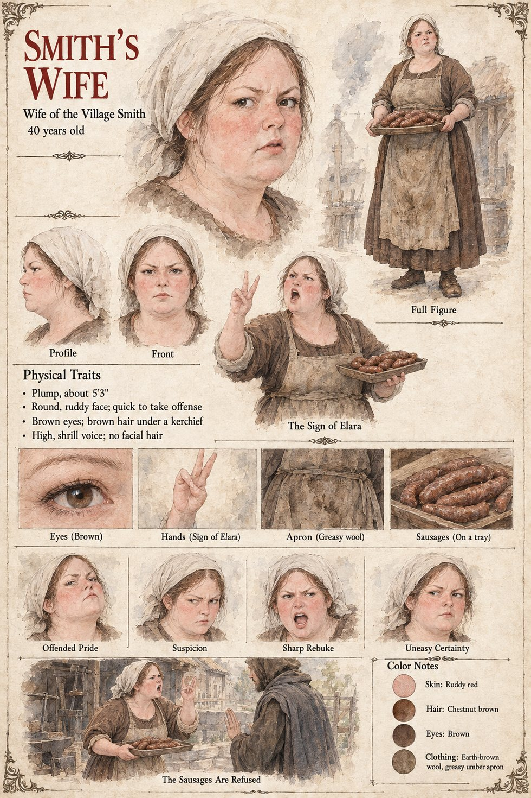

The Smith's Wife
Wife of the village smith · unnamed · 40 years old by her sheet
She has made sausages for the stranger, and he has turned them down. On the twenty-seventh of Garren, on the moot-green, he draws a long deep line in the dust with a row of small flames beside it and a cloud of marks on the farther side; Old Bernat takes the pipe from his mouth and says, quite quietly, “Fossa”; a woman makes the sign of Elara, and a second woman does; and then the smith's wife says in a high voice that the Moon-Man is telling them what to dig. It goes through the ring in a murmur. He is a prophet, or an angel, or the Eastern Dead come back to warn them; he has drawn them a grave, and beside it the pyres, and on the farther side the Red Weather itself coming down to fill the valley.
She does not say, or the manuscript does not record, what she thinks of him after that; her one line is the whole of her part, and it names what everyone had been afraid to. Why the sausages were refused is not given here either. Case 2231 draws her among the village chorus, sending round a dish of boiled sausage and weeping when it comes back untouched. Her husband is the smith. The sheet's forty years, plump five-foot-three, round ruddy face quick to take offense, brown eyes, brown hair under a kerchief, wool dress, greasy apron, tray of sausages and shrill voice are its own; the manuscript has only “a high voice.”